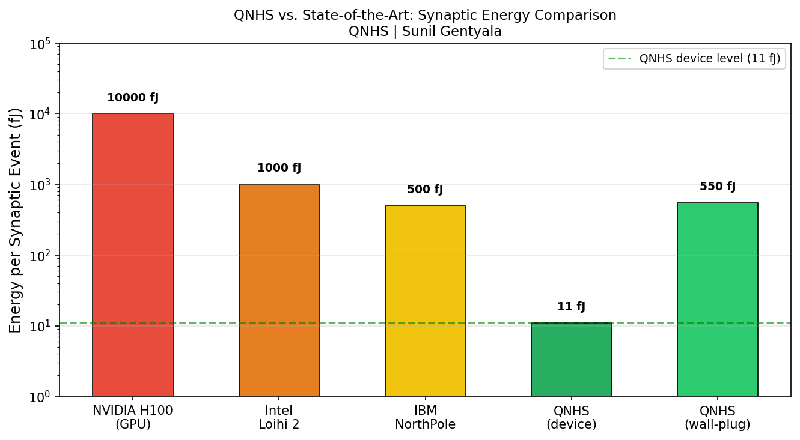
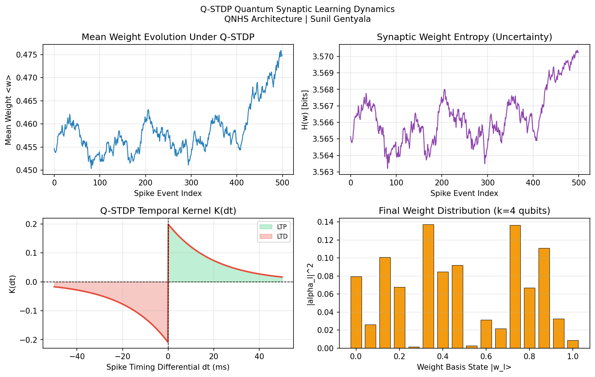
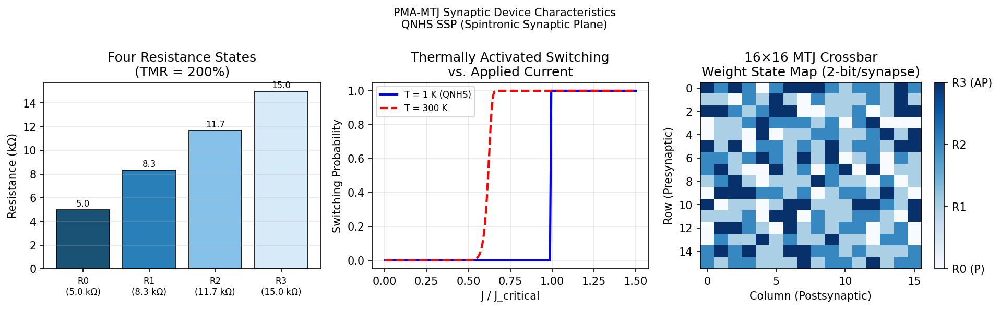
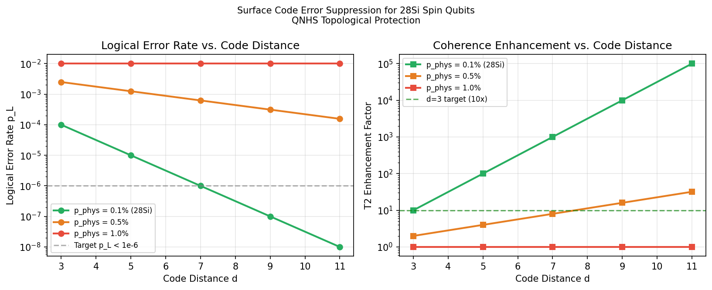

One monolithic stack of spin qubits, spintronic synapses and cryo-CMOS control, modeled at about 11 fJ per synaptic event, with uncertainty built into every weight.
All QNHS numbers on this page are theoretical projections from the models in the repository, not measurements of fabricated hardware. The models report the numbers that count against the idea too.
Every figure below comes from running python run_all_simulations.py.
The planes are bonded by Cu-Cu thermocompression at 200 nm pitch and operated at about 1 K.
28Si spin qubit arrays. Each synapse is a k-qubit superposition protected by a distance-3 surface code.
PMA-MTJ memristors with four resistance states (2 bits) and 0.1 fJ spin-orbit-torque switching.
3 nm cryo-CMOS FinFETs for LIF neurons, the MWPM syndrome decoder and SerDes links.
What is proposed, and what the code checks.
Four models, each with its own test file.


alpha_l(t+1) = N[ alpha_l(t) + eta · K(dt) · (w_l − ⟨w⟩) · alpha_l(t) ]


| Metric | NVIDIA H100 | Intel Loihi 2 | IBM NorthPole | QNHS (projected) |
|---|---|---|---|---|
| E_syn, device level | ~10 pJ | ~1 pJ | ~0.5 pJ | ~11 fJ |
| Energy evidence | ~10 pJ/event (reference) | Measured chips | 25x FPS/W vs. 12 nm GPU | 11.1 fJ device, ≥3.3 pJ wall-plug |
| Weight encoding | FP16 | INT8 | INT8 | 2k quantum states |
| Bayesian uncertainty | None | None | None | Intrinsic |
| Spike-native | No | Yes | Partial | Yes |
| Security primitives | None | None | None | PUF, TRNG (proposed) |
| Operating temperature | 300 K | 300 K | 300 K | ~1 K |
Baseline columns come from published specifications. The QNHS column is a model projection.
Quantum-neuromorphic hardware inherits threats from both of its parents. The threat model covers four areas.
Timing fingerprinting of cloud quantum hardware in 10 queries (GLSVLSI 2025) and up to 85.7% accuracy identifying a victim's algorithm via crosstalk (NDSS 2025).
Sampling makes inference stochastic, but stochastic defenses can be bypassed by gradient averaging, so no robustness is claimed without testing. Q-STDP opens a training-time poisoning channel.
Quantum-dot PUFs from charge noise and MTJ random numbers. Thermal switching is suppressed at 1 K, so random-number cells need near-critical biasing. Crossbar PQC acceleration is a research direction only.
Trusted-foundry flow and post-fabrication verification at 1 K for cryo-CMOS logic locking.
Python 3.10 or newer, with numpy and matplotlib. It runs in a few seconds.
git clone https://github.com/sunilgentyala/QNHS-Research-2026.git cd QNHS-Research-2026 pip install -r requirements.txt python run_all_simulations.py # models and 102 tests, figures/*.png python -m pytest tests/ -v
To cite the software, use the entry below or CITATION.cff.
@software{gentyala2026qnhs,
author = {Gentyala, Sunil},
title = {{QNHS}: Quantum-Neuromorphic Hybrid Substrate simulation suite},
year = {2026},
url = {https://github.com/sunilgentyala/QNHS-Research-2026}
}